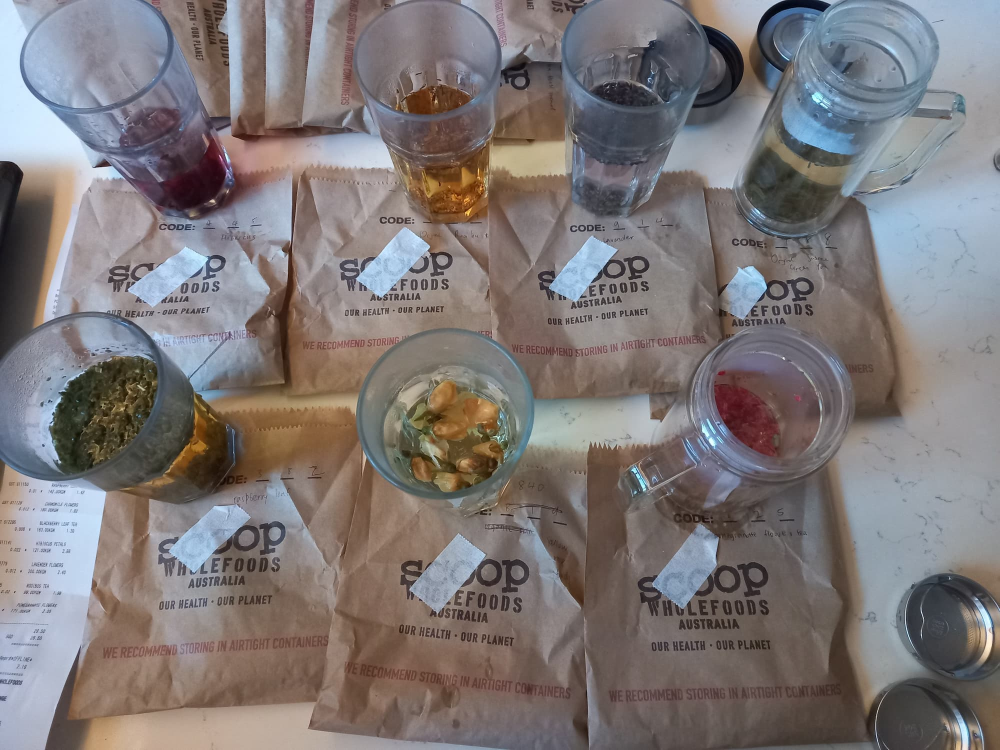

Teas
This post briefly summarizes the various types of teas (traditional and herbal/flower) and our experiences with them.

Teas with caffeine
These are best drunk before 12pm. One way is to drink green tea in the morning and maybe white tea (lower caffeine content) around noon.
Broad categories of teas (source)
| Tea | Description | Caffeine (mg per 240ml) | Oxidation | Benefits | Brew |
|---|---|---|---|---|---|
| Black | Darker reddish with a strong flavour | 40 - 70 | Fully | B | 85°C |
| Green | Pale greenish-yellow with a light and grassy flavour | 25 - 35 | Low | A+ | 70°C |
| Oolong | Golden brown tea with a very delicate flavour | 30 - 50 | Semi | B | 85°C |
| White | Light-colored infusion with a mild flavour | 10 -15 | None | A+ | 70°C |
| Pu-er | Dark-coloured with smooth taste | 60 - 70 | Fully and Aged | B | 90°C |
Selected examples we tried
| Tea | Description | Price ($/kg) | Benefits | Brew |
|---|---|---|---|---|
| Jasmine Green1 | Light yellow and refreshing | 138 | High levels of antioxidants | 70°C |
| Gyokuro Japanese | Sweeter and less astringent tea with | 220 | Higher concentration of nutrients | 50°C - 60°C |
| White Flowery Pekoe | Rare white tea variety known for its soft floral tones and smoothness | 360 | Very calming and is very high in antioxidants | 70°C |
| Pai Mu Dan | Rare white tea has a honeydew and jasmine-like perfume, plucked before the buds open to retain their natural nutrients | 200 | High in polyphenols and essential antioxidants good for immune, nerve and blood pressure health. High doses of the amino acid theanine, known to calm the nervous system and increase brain health. | 70°C |
Non-Caffeinated Tea (After 12pm)
Prices are from Scoop Wholefoods.
| Tea | Description | Price ($/kg) | Benefits | Brew |
|---|---|---|---|---|
| Hibiscus Petals | Magenta colour with a tart berry flavour | 121 (50% off) | Lower blood pressure and reduce cholesterol levels. | 1-3 tsp, and steep in hot water (90C-95C) and let steep for 2-5 minutes. |
| Lavender Flowers | Clear with a flowery taste | 200 | Calming | - |
| Chamomile Flowers | Dark-coloured with smooth taste | 160 | Calming, antiseptic and antibacterial | 1-2 tsp and steep in hot water (90C-95C) for 3-5 minutes |
| Rose buds | Plant flavour | 111 | - | - |
| Pomegranate Flower | Very mild flavour | 171 | High in antioxidants and have antibacterial and antiviral properties | 1-2 tsp in hot water (90C-95C) and steep for 2-3 minutes. |
| Rasbberry Leaf | Mild tea flavour | 142 | High in magnesium, potassium, iron and b vitamins | 2-3 tsp and steep in hot water (90C-95C) for 2-5 minutes |
| Blackberry Leaf | Mild flavour | 163 | High in vitamin C and Tannins | - |
| Nettle Leaf | Earthy, mildly bitter flavour | 45 | High in iron and calcium | 1-3 tsp in hot water (95C-100C) and steep for 2-3 minutes |
| Licorice Root | Sweet taste | 65 | Ease digestive problems | - |
| Rooibos | Herbal flavour | 88 | Great for blood pressure and circulation, healthy skin and strong hair. | - |
| Lemon Myrtle | Strong, beautiful aroma that can be very calming | 106.8 | Powerful antiseptic and anti-viral agent. | 1-2 tsp and steep in hot water (90C) for 2-3 minutes |
| Lemongrass | Blends very well with ginger and peppermint teas | 150 | Support a healthy digestive system | 1-2 tsp and steep in hot water (90C) for 3-5 minutes |
| Lemon Balm | - | 237.5 | Calm and relax anxiety, nerves and moods | - |
| Ginger | Blends very well with ginger and peppermint teas | - | Support a healthy digestive system | 1-2 tsp and steep in hot water (90C) for 3-5 minutes |
| Iced Tea Thirst Quencher | Overpowering sweet tea flavour | 81 | - | - |
Individual Notes
Chanel
Chanel has shortlisted the lemon, ginger and nettle tea for late afternoon tea. There are some other tea to be evaluated - more lemons and ginger tea.
Nicholas
- Hibiscus tea is nice cold
- Licorice tea is sweet, however not for long term consumption
- Ginger tea is warming
- Lemongrass/lemon myrtle tea is refreshing
- Jasmine green tea seems to suppress my appetite